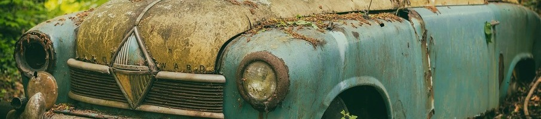

De Rouille et d'Art
Quand le métal devient une oeuvre d'art, 19 mai 2021 Catégorie : Sculpture
La sculpture continue décoluer à travers des mouvements artistiques qui se rattachent désormais plus aux arts visuels qu'à l'architecture.
La pratique de l'éphémère, une démarche de l'art contemporain pleine de sens
Catégorie : Sculpture
La sculpture continue décoluer à travers des mouvements artistiques qui se rattachent désormais plus aux arts visuels qu'à l'architecture.
Catégorie : Conférence
Le graffiti fait maintenant partie des diverses formes d'art, et ce, à part entière. Longtemps considéré comme un acte de vandalisme, certains adeptes se sont débrouillés pour en faire cependant un art respectable.